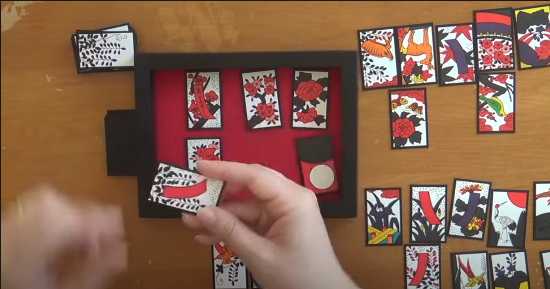

Nintendo
Es el año 1889 en japon, se habian proibido los juegos de azar y las apuestas, por lo que muchos empresarios que se dedicaban a esto se fueron a la quiebra, o por lo menos casi... porque hubo otros que lograron mantenerse, entre ella nintendo.
Esta compania inicio como una empresa de cartas, y su nombre era "nintendo Koppai" dicha empresa inicio muy bien en ventas, tanto asi que se volvio la principal fuente de las tarjetas llamada hanafuda, que aun eran permitidas en el pais por ser conocidas como un juego de mesas
Despuès de algun tiempo, la empresas de cartas fue probando distintos negocios,Y entre todo los negocios que màs vendio la compania fueron los juguetes,contratando personal especializado en eso, pero tambien fijandose en que tambièn podian vender juguetes electronicos que andaban ganado popularidad en aquellos años,pero habia un problema, los empreados no estaban familiarizados con los aparatos electronicos, por lo que los empresarios tubieron que ir a estados unidos, para contratar a personal especializados, hay consigio los derechos para promocionar las consolas de juegos, el primer juego es...
Donkey kong para arcade
Este fue el primer juego hecho por nintendo, aunque este juego


Aunque este juego tenia una tematica , este juego se trataba de popeye el marino. Pero debido a que los dueños del personaje se tardaron demaciado en darle los derechos, a nintendo le daban ganas de lanzar este producto, por lo que Shigeru Miyamoto tuvo que recrar a los personajes
En vez de popeye el marino, un carpintero bigoton, oliba cambio por una chica llamada paulin, y brutus seria cambiado por un chango gigante llamado Donkey Kong
y ase fue el primer gran exito para la compania!! el juego tuvo excelente resultados, asi que Shigeru luego le dio luz verde, a una secuela protagonizada por el hijo de donkey kong
 Donkey kong jr.
Donkey kong jr.
Pasa el tiempo, y la compania decide sacar el tercer juego donde aparece el carpintero bigoton,
dandole un nombre a este llamandolo mario
Resulta que en honor a la persona que le rento las primeras oficinas en estados unidos, llamado mario
segale

Asi es como nacio una leyenda, mario tubo un comienzo..

Super mario bros

Super Mario Bros. o Super Mario Brothers es un videojuego de plataformas, diseñado por Shigeru Miyamoto, lanzado el 13 de septiembre de 1985 y producido por la empresa japonesa Nintendo, para la consola Nintendo Entertainment System

trata sobre el juego conocido como Super Mario Bros. 2 fuera de Japón. Para ver información sobre el juego conocido por el mismo nombre en Japón, véase Super Mario Bros.: The Lost Levels.
en Japón, es un videojuego de plataformas desarrollado y publicado por Nintendo para la consola de videojuegos NES.
Este juego es un remake de otro juego llamado Yume Kōjō: Doki Doki Panic!! (夢工場 ドキドキパニック Yume Kōjō: Doki Doki Panikku), pero con personajes de la serie Super Mario. Al llegar a América, fue renombrado como Super Mario Bros. 2, mientras que el juego llamado Super Mario Bros. 2 en Japón fue rebautizado como Super Mario Bros.: The Lost Levels en las versiones de Super Mario All-Stars lanzadas en América y Europa. El cambio fue hecho básicamente porque el juego original era exactamente igual que el Super Mario Bros., aunque mucho más difícil; para evitar que se pensase en el juego como una modificación de su predecesor, se le cambió el nombre a un juego ya existente.
Datos generales
Nombre japonés
Super Mario Bros. USA
Género
Plataformas
Desarrolladora
Nintendo USA
Distribuidora
Nintendo
Plataforma
NES/SNES/WII
Jugadores
1
Fecha de estreno
Japón
14 de julio de 1992 (NES) - 10 de agosto de 2007 (Wii)
Europa
28 de abril de 1989 (NES) - 25 de mayo de 2007 (Wii)
América
10 de octubre de 1988 (NES) - 2 de julio de 2007 (Wii)
Super mario bros 3

es el tercer videojuego de plataformas de la franquicia Mario para la consola Nintendo Entertainment System. Salió a la venta el 23 de octubre de 1988 en Japón y el 12 de febrero de 1990 en Estados Unidos. Al igual que en títulos anteriores, SMB3 fue diseñado por Shigeru Miyamoto, mientras que la banda sonora fue compuesta por Kōji Kondō. El juego retoma la historia del primer título, en la cual los fontaneros Mario y Luigi deberán salvar a la Princesa Toadstool de las garras del Rey Bowser Koopa.
Super Mario World

Super Mario World —conocido inicialmente en Japón como Super Mario World: Super Mario Bros. 4—, es un videojuego de plataformas desarrollado y publicado por Nintendo para la Super Nintendo Entertainment System. Fue lanzado en Japón en 1990, América del Norte en 1991 y Europa y Australia en 1992